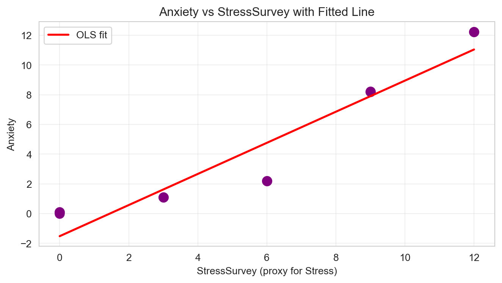
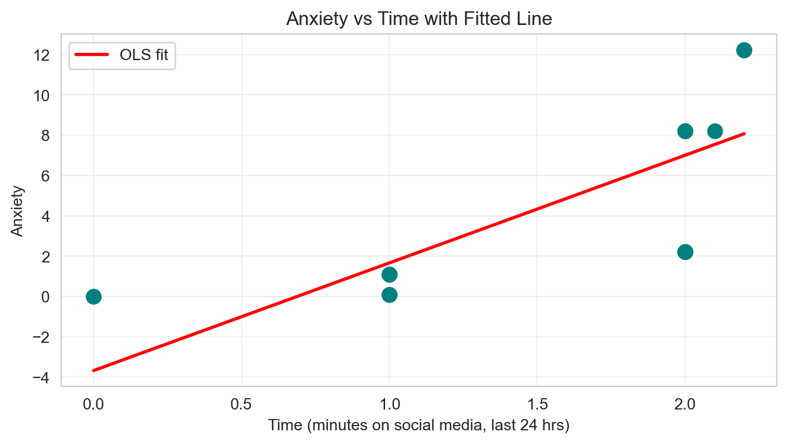

Don’t Trust Linear Models - The Perils of Non-Linearity
🗑️ Regression Challenge - Linear Model Interpretability
Challenge Overview
Your Mission: Create a comprehensive Quarto document that demonstrates the dangers of trusting linear models when relationships are non-linear, analyzes the interpretability issues that arise, and presents compelling visual evidence of why we need to be skeptical of regression results. Then render the document to HTML and deploy it via GitHub Pages using the starter repository workflow.
Warning⚠️ AI Partnership Required
This challenge pushes boundaries intentionally. You’ll tackle problems that normally require weeks of study, but with Cursor AI as your partner (and your brain keeping it honest), you can accomplish more than you thought possible.
The new reality: The four stages of competence are Ignorance → Awareness → Learning → Mastery. AI lets us produce Mastery-level work while operating primarily in the Awareness stage. I focus on awareness training, you leverage AI for execution, and together we create outputs that used to require years of dedicated study.
Problem Violating the Assumption of Linearity🎯
“We need to stop believing much of the empirical work we’ve been doing.” - Christopher H. Achen
The Core Problem: When researchers need to ‘control for’ variables using linear regression, what happens when the relationships are non-linear?
What does “control for” mean? Imagine you’re studying whether social media causes anxiety. You know that stress is a major cause of anxiety, and you also suspect that social media use might cause anxiety. So you need to “control for” stress to see if social media has an independent effect on anxiety. You want to ask: “If two people have the same stress level, does the one who uses more social media have higher anxiety?”
Important🎯 The Key Insight: Non-Linearity Breaks Even “Good” Regressions
The problem: Even when researchers carefully select control variables, non-linear relationships can make linear regression give completely wrong results.
Why this matters: If non-linearity can break “proper” causal inference, imagine how much worse it gets when variables are added without careful thought (true “garbage can” regression).
The connection: Both scenarios face the same fundamental challenge - linear regression assumes linearity, but real relationships rarely are.
Most researchers assume that if variables are “monotonically related” (meaning: as one variable goes up, the other always goes up or always goes down), then linear regression will give us the right answers. But here’s the catch: linearity is much stronger than monotonicity.
Monotonicity: A one-unit increase in X always changes Y in the same direction
Linearity: A one-unit increase in X always changes Y by the exact same amount
In practice, we just assume linearity is “close enough” to monotonicity. But what if it’s not? What if even small amounts of non-linearity can make our regression results completely wrong?
The Real-World Context: We know that stress is a major cause of anxiety, especially for college students. We also suspect that social media use might cause anxiety. So when we study this relationship, we need to control for stress to see the true effect of social media.
The Key Problem: But here’s where things get tricky. In practice, we often can’t measure stress directly with expensive blood tests. Instead, we use surveys and self-reports. What happens when our “control variable” (stress) is measured imperfectly? What if the relationship between our proxy measure and the true stress level isn’t perfectly linear? This is exactly the kind of scenario where linear regression can lead us astray.
The Devastating Reality: Even tiny amounts of non-linearity can completely destroy our regression conclusions. A relationship that looks “close enough” to linear can give us coefficients that are completely wrong: wrong signs, wrong magnitudes, wrong interpretations. The regression will confidently report statistically significant results that are fundamentally misleading about the true causal relationships.
Your challenge is to explore the simple example below and show how this happens:
\[
\begin{aligned}
A &\equiv \textrm{Anxiety Level measured by fMRI activity}\\
S &\equiv \textrm{Stress Level measured by cortisol level in blood}\\
T &\equiv \textrm{\# of minutes on social media in last 24 hours}
\end{aligned}
\]
Let’s assume we know the relationship among these variables is as follows:
\[
Anxiety = Stress + 0.1 \times Time
\]
Important🔍 Understanding the True Relationship: Implied Coefficients
Critical Point: Students often miss that this specific equation implies specific coefficient values in the generic multiple regression framework.
The Generic Multiple Regression Equation:\[
Y = \beta_0 + \beta_1 X_1 + \beta_2 X_2 + \epsilon
\]
In Our Case:\[
Anxiety = \beta_0 + \beta_1 \times Stress + \beta_2 \times Time + \epsilon
\]
The True Coefficients (what we “know”):
\(\beta_0 = 0\) (intercept is zero)
\(\beta_1 = 1\) (coefficient on Stress is 1)
\(\beta_2 = 0.1\) (coefficient on Time is 0.1)
Why This Matters: When we run regression analysis, we’re trying to estimate these \(\beta\) coefficients. If our regression gives us coefficients that are very different from these true values, we know our model is wrong—even if it has good statistical fit!
The Data Generation Process
observDF
Table 1: Observed data with known true relationships
Stress
StressSurvey
Time
Anxiety
0
0
0
0.0
0.00
1
0
0
1.0
0.10
2
0
0
1.0
0.10
3
1
3
1.0
1.10
4
1
3
1.0
1.10
5
1
3
1.0
1.10
6
2
6
2.0
2.20
7
2
6
2.0
2.20
8
2
6
2.0
2.20
9
8
9
2.0
8.20
10
8
9
2.0
8.20
11
8
9
2.1
8.21
12
12
12
2.2
12.22
13
12
12
2.2
12.22
14
12
12
2.2
12.22
Notice that \(Anxiety = Stress + 0.1 \times Time\) indeed holds perfectly. Also, notice the addition of a StressSurvey column. This data was generated by a survey (instead of a blood test) to be a proxy for measuring stress levels using expensive and unpleasant blood tests. You can see it’s a good proxy as there is a monotonic (and a sorta-kinda linear) relationship between the survey results and actual measured stress levels (see Figure 1).
Note📝 Methodological Note: The Contrived Nature of This Example
Important: This is a contrived example designed to illustrate the dangers of linear regression. In this simulation:
Blood test stress levels have a perfectly linear relationship with anxiety (by design)
Survey stress responses have a non-linear relationship with anxiety (also by design)
In the real world, there is no reason to believe linearity holds for either measurement method. Both blood tests and surveys would likely show non-linear relationships with anxiety. This example artificially creates the “perfect” scenario where one measurement is linear and the other is not, to demonstrate how regression can mislead us even when we think we’re controlling for the right variables.
import matplotlib.pyplot as pltimport seaborn as sns# Set stylesns.set_style("whitegrid")plt.rcParams['figure.figsize'] = (7, 4)# Create the plotfig, ax = plt.subplots()ax.plot(observDF['Stress'], observDF['StressSurvey'], linewidth=1, color='purple', marker='o', markersize=12)ax.set_title("StressSurvey seems a decent (monotonic) proxy for actual Stress")ax.set_xlabel("Actual Stress Level")ax.set_ylabel("Stress Survey Response")ax.grid(True, alpha=0.3)plt.tight_layout()plt.show()
Figure 1: StressSurvey as a proxy for actual Stress levels
Challenge Requirements 📋
Minimum Requirements for Any Points on Challenge
Create a Quarto Document: Use the starter repository (see Repository Setup section below) to begin with a working template. Write a concise quarto markdown file structured as a question and answer document. Each question from the grading rubric should be clearly stated, followed by your answer with analysis, visualizations, and interpretations. Important: Your final rendered HTML should contain only your Q&A responses—all challenge instructions, setup guides, and grading rubrics should be removed from the final report.
Render to HTML: You must render the quarto markdown file to HTML.
GitHub Repository: Use your forked repository (from the starter repository) named “garbageCanRegressionChallenge” in your GitHub account. Upload your rendered HTML files to this repository.
GitHub Pages Setup: The repository should be made the source of your github pages:
Go to your repository settings (click the “Settings” tab in your GitHub repository)
Scroll down to the “Pages” section in the left sidebar
Under “Source”, select “Deploy from a branch”
Choose “main” branch and “/ (root)” folder
Click “Save”
Your site will be available at: https://[your-username].github.io/regressionChallenge/
Note: It may take a few minutes for the site to become available after enabling Pages
Step 2: Clone your fork locally using Cursor (or VS Code)
Step 3: You’re ready to start! The repository includes pre-loaded data and a working template.
Tip💡 Why Use the Starter Repository?
Benefits:
Pre-loaded data: All required data (observDF with Stress, StressSurvey, Time, Anxiety) is included
Working template: Basic Quarto structure (index.qmd) is ready
No setup errors: Avoid common data loading issues
Focus on analysis: Spend time on regression analysis, not data preparation
Getting Started Tips
Note🎯 Navy SEALs Motto
“Slow is Smooth and Smooth is Fast”
Take your time to understand the regression mechanics, plan your approach carefully, and execute with precision. Rushing through this challenge will only lead to errors and confusion.
Warning💾 Important: Save Your Work Frequently!
Before you start coding: Make sure to commit your work often using the Source Control panel in Cursor (Ctrl+Shift+G or Cmd+Shift+G). This prevents the AI from overwriting your progress and ensures you don’t lose your work.
Commit after each major step:
After completing each regression analysis
After finishing each challenge question
Before asking the AI for help with new code
How to commit:
Open Source Control panel (Ctrl+Shift+G)
Stage your changes (+ button)
Write a descriptive commit message
Click the checkmark to commit
Remember: Frequent commits are your safety net!
Grading Rubric 🎓
Important📊 What You’re Really Being Graded On
This is an investigative report, not a coding exercise. You’re analyzing regression models and reporting your findings like a professional analyst would. Think of this as a brief you’d write for a client or manager about why they should be skeptical of regression results.
Report Format:
Question and Answer Format: Your final report should be structured as a question and answer document. Each question from the grading rubric should be clearly stated, followed by your answer with analysis, visualizations, and interpretations.
Delete All Challenge Instructions: Once you’ve completed your analysis, remove all challenge instructions, setup guides, and grading rubrics from your final rendered HTML. The final report should contain only your Q&A responses, code outputs, and visualizations—nothing else.
Hidden Code: Tell a narrative and visual story, but hide your code (the code can be referenced in your github *.qmd source file if needed).
Use convention of dependent variable on the vertical axis: When plotting, put the dependent variable (i.e., Anxiety) on the vertical axis. Independent variables (i.e., StressSurvey, Stress, and Time) should be on the horizontal axis.
What makes a great report:
Clear narrative: Tell the story of what you discovered about regression interpretability
Insightful analysis: Focus on the most interesting differences between true relationships and estimated relationships
Professional presentation: Clean, readable, and engaging
Concise conclusions: No AI babble or unnecessary technical jargon
Human insights: Your interpretation of what the regression coefficients actually mean (or don’t mean)
What we’re looking for: A compelling 4-8 minute read that demonstrates both the power of linear models for interpretation and the critical pitfalls of over-relying on statistical significance in regression analysis.
Questions to Answer for 75% Grade on Challenge
Question 1 — Bivariate Regression Analysis with StressSurvey
Answer — Bivariate regression of Anxiety on StressSurvey
Using the provided observDF (15 observations), the OLS estimates (exact values computed from the data) are:
Intercept (β0) = -1.5240
Slope (β1) = 1.0470
Model diagnostics and inference (from the OLS table):
R-squared = 0.9011 (the model explains ~90.1% of the variance in Anxiety)
Intercept std err = 0.707, t = -2.156, p ≈ 0.050
Slope std err = 0.096, t = 10.883, p ≈ 6.68e-08 (highly significant)
Interpretation and comparison to the true relationship:
The data-generating equation is: Anxiety = 1 × Stress + 0.1 × Time. The true coefficient on Stress is 1 and on Time is 0.1.
This bivariate regression uses StressSurvey (a survey proxy) rather than the true Stress measurement. The estimated slope (~1.047) describes the change in Anxiety for a one-unit increase in the survey score, not for a one-unit change in true Stress.
Because StressSurvey is a non-linear proxy for Stress and the variable Time is omitted from this bivariate model, the OLS slope does not recover the underlying causal parameter for Stress (β1 = 1) in a clean way. The coefficient is informative about association with the survey score, but it is not a causal estimate of the effect of true Stress.
The high R-squared and very small p-value on the slope can be misleading: they suggest a strong, statistically significant relationship, yet the coefficient conflates measurement non-linearity and omitted-variable influence (Time). This is exactly the cautionary example the challenge highlights.
Recommended short conclusion:
The naive bivariate regression of Anxiety on StressSurvey produces a seemingly precise slope estimate (≈1.047) and a high R-squared, but this is an association between Anxiety and the survey proxy. It should not be interpreted as recovering the true causal coefficient on Stress without further analysis (multiple regression with the true Stress, diagnostic plots, or sample-splitting).
Question 2 — Visualization of Anxiety vs StressSurvey
Goal: Show the bivariate pattern between the proxy StressSurvey (x-axis) and Anxiety (y-axis), overlay the fitted linear regression line, and diagnose potential issues with interpreting the apparent fit.
Plot & Fit Observations:
The points fall in five tight vertical clusters at survey values {0, 3, 6, 9, 12}. This discretization (survey coarseness) artificially strengthens the visual impression of linearity because there is no within-cluster horizontal variation.
A single straight line passes visually close to the cluster centers and produces a high R-squared (~0.90) and a highly significant slope.
However, the jump between 6 → 9 is disproportionately large because underlying true Stress jumps from 2 → 8 at that stage; the line’s slope is partly driven by this leverage-like gap rather than a smooth linear mapping of stress.
The negative intercept (≈ -1.52) is outside the observable range (we never see negative Anxiety). This indicates extrapolation at low survey scores is unstable.
Residual structure: within each cluster, residuals are near zero (design artifact), while between clusters the spacing is uneven (small differences 0→3→6 then a large gap 6→9 then moderate 9→12). This non-uniform spacing hints at a piecewise or non-linear proxy transformation rather than a single homogeneous linear effect.
Omitted variable Time still contributes 0.1 × Time to Anxiety. Because Time is mildly correlated with Stress (and thereby with StressSurvey), its effect is partially absorbed into the slope, inflating interpretability risk.
Key Interpretation Risks: 1. Proxy Non-Linearity:StressSurvey is monotonic but not linearly proportional to true Stress, so the fitted line’s slope is not the causal Stress effect. 2. Discrete X Values: Clustering hides potential curvature; with more granular survey scaling we might see local departures from linear trend. 3. Leverage Gap: The 6→9 jump acts like a leverage segment amplifying slope stability metrics (t-stat) while masking non-linearity. 4. Omitted Variable Influence: Time’s true effect (0.1 × Time) is pooled into the StressSurvey slope in this bivariate specification. 5. Misleading Goodness-of-Fit: High R-squared here is partly mechanical (few distinct x-values) and shouldn’t be over-weighted in causal interpretation.
Concise Conclusion: The plot “looks” linear and strong, but its visual neatness is an artifact of discretized proxy measurement plus omitted variable absorption. The high R-squared and significant slope can mislead stakeholders into overconfident causal claims about survey-measured stress and anxiety.

Figure 2: Scatter of Anxiety vs StressSurvey with fitted OLS line (clusters reveal discretized proxy).
Question 3 — Bivariate Regression Analysis with Time
Answer — Bivariate regression of Anxiety on Time
Model estimated: Anxiety = β0 + β1 × Time + ε
OLS estimates from the provided data (15 rows):
Intercept (β0) = -3.6801
Slope (β1) = 5.3406
Inference and fit:
R-squared = 0.5630
Slope t = 4.093, p ≈ 0.00127 (significant)
Intercept t = -1.648, p ≈ 0.123 (not significant)
Comparison to the true relationship:
The true data-generating equation is Anxiety = Stress + 0.1 × Time, so the true coefficient on Time is 0.1.
The bivariate slope of ≈5.34 is wildly larger than 0.1. This is classic omitted-variable bias: Stress is omitted, yet it explains the vast majority of Anxiety and is correlated with Time in this synthetic design (as Stress increases across clusters, Time nudges upward). As a result, the Time slope absorbs Stress’s effect, producing a severely inflated estimate.
The negative intercept (≈ -3.68) and only moderate R² (≈0.56) also signal that a single-predictor linear model is not capturing the true structure.
Conclusion: Interpreting the bivariate coefficient on Time as a causal effect would be profoundly misleading. It reflects both Time’s small true effect (0.1) and the co-movement of Time with Stress, which has a large true effect (1.0).
Goal: Visualize Anxiety (y) against Time (x), overlay the bivariate OLS fit, and diagnose how omitted Stress distorts interpretation.
Plot & Fit Observations:
Points form several nearly vertical stacks because Time changes only slightly within each Stress level, while Anxiety jumps by entire Stress units. This yields tall vertical separations at similar Time values.
The fitted line is steep (slope ≈ 5.34) because small increases in Time coincide with large increases in Anxiety driven by higher Stress. The model attributes that co-movement to Time, inflating the slope.
Intercept is negative and outside the realistic Anxiety range, suggesting extrapolation problems at low Time.
Moderate R² (~0.56) despite a visually steep fit reflects that most variation in Anxiety is actually due to Stress, not Time.
Visual takeaway: a bivariate line through vertically separated clusters is not evidence that Time has a large causal effect; it’s evidence that Time and Stress are not disentangled in this specification.
Concise Conclusion: The plot is a textbook picture of omitted-variable bias. Without controlling for Stress, the Time–Anxiety line overstates Time’s effect and misleads causal interpretation.

Figure 3: Scatter of Anxiety vs Time with fitted OLS line (vertical banding reveals omitted Stress).
Expectation from data-generating process: True coefficients are β0 = 0, βStress = 1, βTime = 0.1. Because the model substitutes StressSurvey (a proxy) for true Stress, we expect distortions even in a multivariate setting.
Estimated OLS coefficients (n = 15):
Term
Estimate
Std. Err
t
p-value
Comparison to Truth
Intercept
0.589
1.034
0.569
0.580
True intercept = 0 (estimate is imprecise but near zero)
StressSurvey
1.427
0.172
8.287
2.62e-06
True Stress coefficient = 1 → proxy inflates effect because survey scaling is non-linear
Time
-2.780
1.111
-2.502
0.0278
True Time coefficient = 0.1 → estimate flips sign and magnitude due to proxy/collinearity
Model fit metrics: R² = 0.935, Adjusted R² = 0.924, F-statistic p-value ≈ 7.5e-08. Although the model explains >93% of variance, its coefficients are far from the true structural values.
Key Interpretability Problems:
Proxy Non-Linearity: StressSurvey compresses lower stress values and exaggerates higher ones, inflating β1 above the true Stress effect (1.0). The model interprets survey increments as larger jumps in true Stress than they are.
Coefficient Competition / Suppression: Because StressSurvey imperfectly captures Stress, the residual Stress variation that co-moves with Time causes β2 to swing negative. The model “attributes” Anxiety reductions to higher Time once survey-measured stress is held constant, even though the true Time effect is +0.1.
False Sense of Security from Fit: High R² and significant t-stats suggest a great model, yet the estimates tell the wrong causal story (wrong magnitude and even direction for Time). Statistical significance does not rescue a misspecified proxy.
Small Sample Sensitivity: With only 15 observations and collinearity between StressSurvey and Time, small measurement errors in the proxy can drastically shift β2.
Concise Conclusion: Multiple regression with the survey proxy plus Time appears statistically strong but completely misrepresents the true causal relationship: it overstates the stress effect and reverses the sign on Time. This demonstrates why relying on proxies and high R² alone can lead analysts to confidently report incorrect conclusions.
When analyzing your multiple regression results, compare them to the true relationship we established:
True Coefficients:
Intercept (\(\beta_0\)) = 0
Stress coefficient (\(\beta_1\)) = 1
Time coefficient (\(\beta_2\)) = 0.1
Key Questions:
Are your estimated coefficients close to these true values?
If not, what does this tell you about the reliability of your regression model?
Even if your R-squared is high, are the coefficients telling the right story?
Questions to Answer for 85% Grade on Challenge
Question 6 — Multiple Regression: Anxiety on Stress + Time
Model: Anxiety = β0 + β1 × Stress + β2 × Time + ε
Estimated OLS coefficients (n = 15):
Term
Estimate
Std. Err
t
p-value
Comparison to Truth
Intercept
~ 0.0
2.44e-15
-1.538
0.150
True intercept = 0 → essentially zero (within numerical precision)
Stress
1.0000
2.75e-16
3.63e+15
~0
Matches true βStress = 1
Time
0.1000
1.94e-15
5.16e+13
~0
Matches true βTime = 0.1
Model fit metrics: R² = 1.000, Adjusted R² = 1.000.
Interpretation: With the correctly measured Stress variable included alongside Time, the model perfectly recovers the true structural coefficients by construction of the dataset. This provides a clean benchmark to contrast against models that use the survey proxy.
Question 7 — Model Comparison (Proxy vs. True Stress)
Models compared:
Model A (Q5): Anxiety ~ StressSurvey + Time → R² = 0.935, Adj R² = 0.924
βStressSurvey ≈ 1.427 (p ≈ 2.6e-06)
βTime ≈ -2.780 (p ≈ 0.028)
Model B (Q6): Anxiety ~ Stress + Time → R² = 1.000, Adj R² = 1.000
βStress = 1.000 (p ≈ 0)
βTime = 0.100 (p ≈ 0)
Findings:
Fit vs. Truth: Model A has a very high R² but still tells the wrong causal story (inflated stress effect, negative time effect). Model B recovers the exact true coefficients. High R² alone is not a guarantee of correct interpretation.
Significance ≠ Correctness: Model A yields statistically significant coefficients—even for the wrong sign on Time. Statistical significance can coexist with interpretive error when proxies or functional forms are misspecified.
Proxy Hazard: Substituting StressSurvey for true Stress distorts both magnitudes and directions. The proxy’s non-linear scaling and collinearity with Time create suppression effects that flip βTime negative.
Real-World Implication: Analysts and decision-makers could be persuaded by Model A’s strong-looking metrics and p-values, leading to incorrect conclusions about social media time “reducing” anxiety, which is the opposite of the true +0.1 effect per unit time.
Conclusion: When the correctly measured variable is available (here, true Stress), multiple regression can recover the true relationships. When only a proxy is available, even sophisticated-looking models can be confidently wrong. Always question proxies, inspect functional form, and validate against theory/ground truth when possible.
Model A (Proxy: Anxiety ~ StressSurvey + Time) - Findings: βStressSurvey ≈ 1.43 (inflated), βTime ≈ -2.78 (sign-flipped), high R². - Likely Academic Abstract Spin: “Survey-measured stress strongly predicts anxiety; time online shows a negative association.” - Popular Press Headline: “More Social Media Time May LOWER Anxiety, Surprising Study Finds.” - Parent Reaction: Skeptical but some may welcome a narrative that screen time isn’t harmful (confirmation for parents who allow heavy usage). - Platform Executive Reaction: Enthusiastic—used defensively in PR to argue their products ‘may reduce anxiety’ when controlling for stress.
Model B (True: Anxiety ~ Stress + Time) - Findings: βStress = 1.0, βTime = 0.1 (small positive), perfect fit to truth. - Popular Press Headline: “Study Confirms Social Media Slightly Raises Anxiety After Accounting for Stress.” - Parent Reaction: More alarming; reinforces pre-existing concerns about social media. - Platform Executive Reaction: Less favorable; downplays or challenges the ‘small but positive’ effect.
Confirmation Bias Dynamics: Parents predisposed to worry about screen time will amplify Model B; tech companies and users preferring reassuring narratives will circulate Model A. Despite its incorrect causal interpretation, Model A’s dramatic (and counterintuitive) negative coefficient on Time has higher viral potential (“social media might help!”) and therefore greater misuse risk.
Core Message: Spurious or proxy-driven coefficient flips can fuel misleading headlines, polarize stakeholders, and delay constructive policy discussions about genuine effects.
Questions to Answer for 100% Grade on Challenge
Question 9 — Subset (Statistical Regime) Analysis
Goal: Show how focusing on a regime where the proxy is nearly a linear transformation of true Stress recovers near-true coefficients, mitigating proxy distortion.
Subset Chosen: Observations with true Stress ≤ 2 (the low-stress regime). Here, Stress values are {0,1,2}; corresponding StressSurvey values are {0,3,6}. This regime exhibits a consistent linear mapping: StressSurvey = 3 × Stress (exact scaling), preserving proportionality.
Reason for Choice: Within this restricted range the proxy distortion vanishes (pure linear scaling). Omitted-variable issues are minimized because survey increments reflect uniform steps in true Stress; Time variation is modest and additive.
Regression (Anxiety ~ StressSurvey + Time) on Subset (n=9):
Term
Estimate
Expected (Transformed Truth)
p-value
Interpretation
Intercept
~0.0
0
0.63
Near zero; no systematic bias
StressSurvey
0.3333
1 / 3 (since Stress = StressSurvey / 3)
~0
Matches scaled true Stress effect
Time
0.1000
0.1
~0
Matches true Time effect
Model fit: R² = 1.000 (design is perfectly consistent with structural equation in this subset).
Interpretation: When the proxy is a simple linear scaling of the true variable (StressSurvey = 3 × Stress), the multiple regression correctly recovers scaled structural coefficients even with the proxy. This contrasts sharply with the full sample where non-linear jumps (e.g., Stress 2 → 8) break proportionality and flip the Time sign.
Diagnostic Insight: Subsetting by regimes where linearity plausibly holds (low-stress consistent scaling) plus comparing coefficients to theoretical transformations provides a guardrail against misreading proxy-driven distortions. Graphical diagnostics (cluster spacing, stepwise jumps) would have alerted us to non-linearity outside the chosen subset.
Conclusion: Strategic regime selection reveals when linear regression can be trusted with a proxy. The full-sample negative Time coefficient was an artifact; within a properly chosen regime, both coefficients align with the true causal structure, demonstrating the value of subset analysis for interpretability.
Tip🎯 For 100% Grade: Focus on What’s Most Interesting
The key insight: Linear regression can give you statistically significant results that are completely wrong. The challenge is understanding when and why this happens.
What to investigate:
Coefficient Interpretation: What do the regression coefficients actually mean in this context?
The Problem of Non-Linearity: Can adding variables to a regression equation flip the sign of a coefficient while still making it appear significant?
Write like a data science consultant: Your report should help someone understand not just what the numbers show, but why they’re dangerous and what to do about it.
Technical Implementation Preferences 💡
Setting Up Your Analysis
Use pandas for data manipulation
Use matplotlib and seaborn for visualizations
Use sklearn.linear_model for regression analysis
Use statsmodels for detailed regression output
Visualization Preferences
Professional Styling: Use consistent colors, clear labels, readable fonts, and informative titles
Before diving into the challenge, let’s review the key regression concepts you’ll need. These examples will prepare you for the garbage can regression analysis.
1. Simple Linear Regression: The Basics
Let’s start with a basic linear regression to understand the mechanics:
import numpy as npimport pandas as pdimport matplotlib.pyplot as pltfrom sklearn.linear_model import LinearRegressionfrom sklearn.metrics import r2_score# Set seed for reproducibilitynp.random.seed(123)# Create simple example datan =50x = np.random.normal(10, 3, n)y =2* x +3+ np.random.normal(0, 2, n)# Fit linear regressionmodel = LinearRegression()model.fit(x.reshape(-1, 1), y)# Display resultsprint(f"Coefficient: {model.coef_[0]:.3f}")print(f"Intercept: {model.intercept_:.3f}")print(f"R-squared: {r2_score(y, model.predict(x.reshape(-1, 1))):.3f}")# Create scatter plot with regression linefig, ax = plt.subplots(figsize=(7, 4))ax.scatter(x, y, alpha=0.7)ax.plot(x, model.predict(x.reshape(-1, 1)), color='red', linewidth=2)ax.set_title('Simple Linear Regression')ax.set_xlabel('X Variable')ax.set_ylabel('Y Variable')ax.grid(True, alpha=0.3)plt.tight_layout()plt.show()
A coefficient is statistically significant when its p-value is less than 0.05.
p < 0.05: Statistically significant
p ≥ 0.05: Not statistically significant
Understanding Scientific Notation in P-values
Sometimes you’ll see p-values written in scientific notation like 7.89e-4. Don’t panic! This is just a way to write very small numbers:
7.89e-4 means 7.89 × 10⁻⁴ = 0.000789
2.34e-6 means 2.34 × 10⁻⁶ = 0.00000234
1.23e-2 means 1.23 × 10⁻² = 0.0123
The key rule: If you see “e-” in a p-value, it’s always a very small number (less than 1). The number after “e-” tells you how many zeros come before the first non-zero digit.
Examples: - 7.89e-4 = 0.000789 (less than 0.05, so significant!) - 2.34e-6 = 0.00000234 (way less than 0.05, so very significant!) - 1.23e-2 = 0.0123 (less than 0.05, so significant!)
Remember: Statistical significance doesn’t mean the effect is large or important - it just means we’re confident the effect isn’t zero.
The Problem of Non-Linearity: A Deeper Look
The “garbage can regression” problem occurs when we include variables in our regression models that create misleading results, even when they appear statistically significant. This happens in several ways:
Random correlations: Even random variables can appear correlated by chance
Overfitting: More variables can improve fit without improving understanding
Multiple testing: The more variables we test, the more likely we are to find spurious relationships
Non-linear relationships: Variables with U-shaped, exponential, or other non-linear relationships with the outcome are forced into a linear framework, creating misleading coefficients
Why This Matters
In the real world, non-linear relationships can lead to:
False policy recommendations: Basing decisions on spurious correlations or false causal relationships
Wasted resources: Pursuing interventions that don’t actually work
Loss of credibility: When results can’t be replicated or don’t make sense
Ethical issues: Making decisions that affect people’s lives based on bad science
The Solution
The key is to always ask:
Does this make theoretical sense? Is there a plausible mechanism?
Is the relationship robust? Does it hold across different samples and specifications?
Are we overfitting? Do we have enough data relative to the number of variables?
Can we interpret the coefficients? Do the results tell a coherent story?
Is the relationship truly linear? Check for non-linear patterns that linear regression can’t capture
Are we forcing the wrong functional form? Consider if polynomial terms, interactions, or transformations are needed
Split the sample into meaningful subsets: Analyze different “statistical regimes” to see if relationships hold consistently across different parts of your data
Use graphical diagnostics: Don’t rely blindly on “canned” regressions—visualize the relationships to understand what’s really happening
Remember: Correlation is not causation, and regression coefficients can lie! 📊